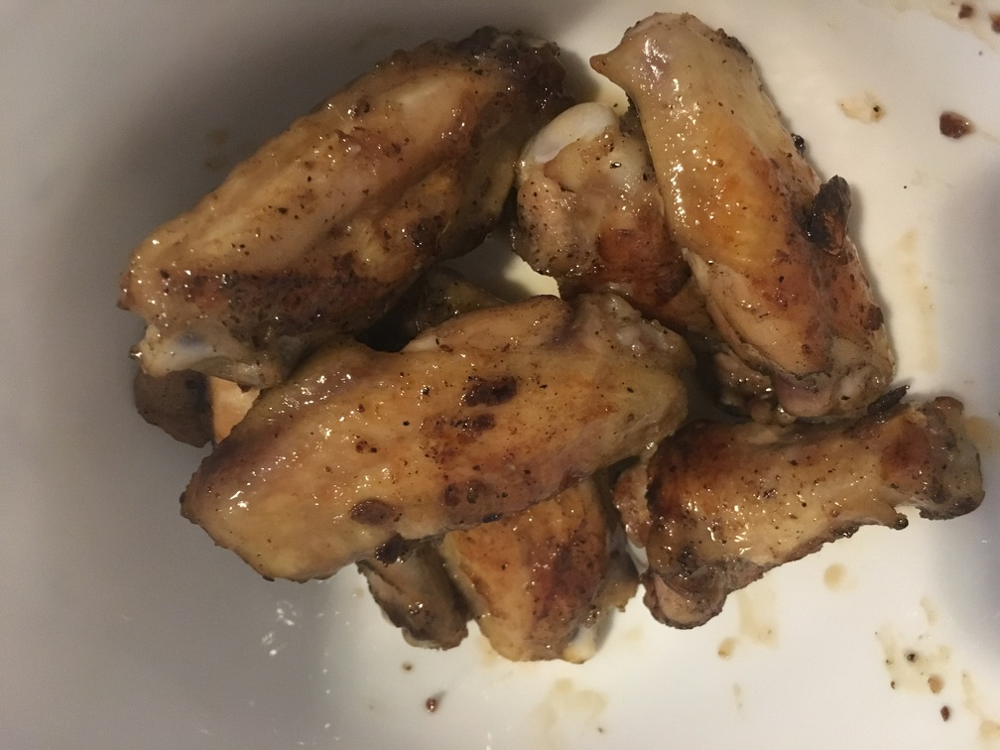

| Other | Meat | Veggie | Fruit |
|---|---|---|---|
| nuoc mam | chicken | garlic | |
| pepper | |||
| sesame oil | |||
| sugar |
| instructions |
|---|
| Marinate chicken with minced garlic, black pepper, and a pinch of sesame oil |
| Fry chicken |
| Boil mixture with ratio 1.75 sugar : 1 nuoc mam : 2 water and a pinch of sesame oil |
| Add chicken and coat with sauce |